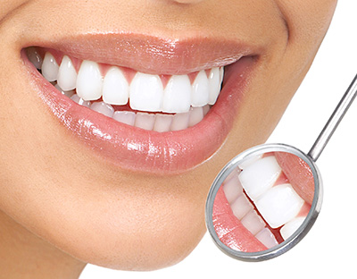
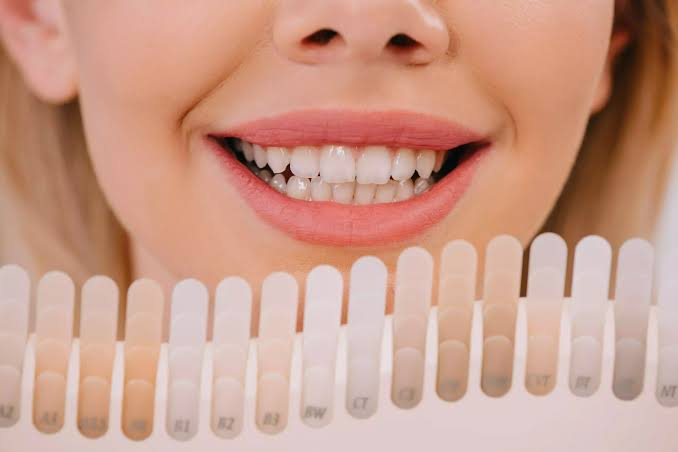

💎 Zirkonyum Diş Sektörel Çözümlerimiz


Karaca Dental bünyesinde en gelişmiş sanayi tipi CAD/CAM cihazları kullanılarak üretilen zirkonyum kaplamalar, modern estetik diş hekimliğinin en güvenilir ve en prestijli çözümlerinden biridir. Metal altyapı barındırmayan bu özel biyo-uyumlu materyal, geleneksel porselenlerde yaşanan diş eti kenarındaki gri-mor koyu renkli çizgilerin oluşmasını tamamen engeller.
Laboratuvarımızda mikron düzeyinde işlenen yüksek yarı geçirgen monolitik ve çok katmanlı (multilayer) zirkonyum bloklar, doğal insan dişinin ışık geçirme ve yansıtma özelliklerini birebir taklit eder. 1200 MPa'ı aşan ekstrem kırılma direnci sayesinde sadece ön bölge estetiğinde değil, en yüksek çiğneme basıncına maruz kalan arka bölge azı dişlerinde ve çok üyeli uzun köprü restorasyonlarında da güvenle tercih edilebilir. Isı yalıtım yeteneği mükemmel olduğu için hastalarda sıcak-soğuk hassasiyeti yaratmaz, doku dostudur ve alerjik reaksiyon riskini sıfıra indirir.
⬅ Ana Sayfaya Dön